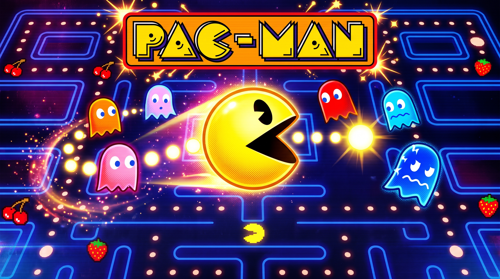

Welcome to Pac-Man Maze Adventures
Whether you are a fearless maze runner or a careful ghost dodger, the arcade world is packed with glowing pellets, power-ups, and high-score dreams. Grab a power pellet, track the ghosts, and race through the maze for the next big snack-sized victory.
Get the Power Pellet!
Your edge against the ghost pack, tight corners, and last-second chases before the bonus round begins.
Essential for turning Blinky, Pinky, Inky, and Clyde into easy pickings.
Great for clearing a maze and stacking points before time runs out.
Bonus Fruits
When exploring the maze, keep an eye out for cherries, strawberries, and other bonus treats that can add a huge score boost if you stay sharp and keep moving.
To learn more about the next level, click here.
Level Select
As Pac-Man says in the arcade:
ワカ・ワカ
